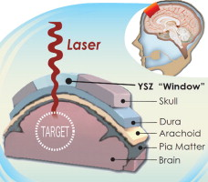
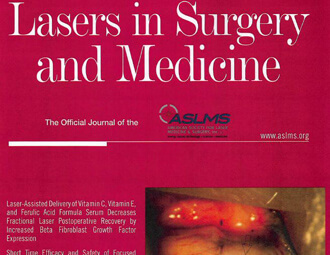

<section id="publications" class="wrapper special">
  <div class="inner">
    <header class="align-center">
      <h2>Featured Publications</h2>
    </header>
    <div class="flex flex-2">
      <article>
        <div class="image fit">
          
        </div>
        <header>
          <h3>Transparent nanocrystalline yttria-stabilized-zirconia calvarium prosthesis</h3>
        </header>
        <p>Laser-based diagnostics and therapeutics show promise for many neurological disorders. However, the poor transparency of cranial bone (calvaria) limits the spatial resolution and interaction depth that can be achieved, thus constraining opportunity in this regard. Herein, we report preliminary results from efforts seeking to address this limitation through use of novel transparent cranial implants made from nanocrystalline yttria-stabilized zirconia (nc-YSZ). </p>
        <footer>
          <a href="http://www.nanomedjournal.com/article/S1549-9634(13)00361-4/abstract" class="button special">Read More</a>
        </footer>
      </article>
      <article>
        <div class="image fit">
          
        </div>
        <header>
          <h3>Evaluation of laser bacterial anti-fouling of transparent nanocrystalline yttria-stabilized-zirconia cranial implant</h3>
        </header>
        <p>The development and feasibility of a novel nanocrystalline yttria-stabilized-zirconia (nc-YSZ) cranial implant has been recently established. The purpose of what we now call “window to the brain (WttB)” implant (or platform), is to improve patient care by providing a technique for delivery and/or collection of light into/from the brain, on demand, over large areas, and on a chronically recurring basis without the need for repeated craniotomies. WttB holds the transformative potential for enhancing light-based diagnosis and treatment of a wide variety of brain pathologies including cerebral edema, traumatic brain injury, stroke, glioma, and neurodegenerative diseases.</p>
        <footer>
          <a href="http://onlinelibrary.wiley.com/doi/10.1002/lsm.22558/abstract" class="button special">Read More</a>
        </footer>
      </article>
    </div>
  </div>
</section>
